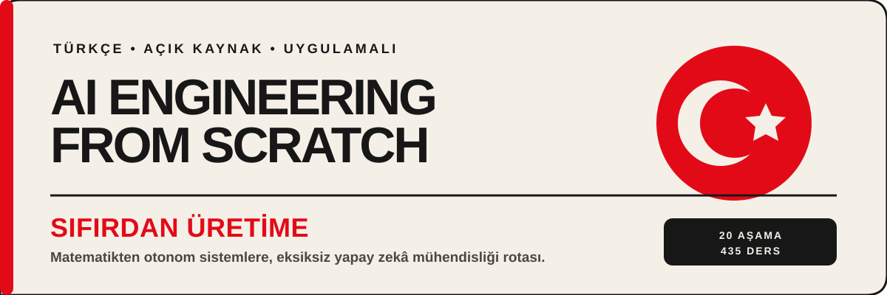

Türkçe AI mühendisliği müfredatı
Matematik temellerinden üretim sistemlerine uzanan dersleri seçin ve öğrenmeye başlayın.
20 aşama503 ders
%100 Türkçe anlatım
Aşama 0: Kurulum ve Araçlar12 ders
Aşama 1: Matematiğin Temelleri22 ders
- Doğrusal Cebir Sezgisi
- Vektörler, Matrisler ve İşlemler
- Matris Dönüşümleri
- Machine Learning için Hesaplama
- Zincir Kuralı ve Otomatik Türev Alma
- Olasılık ve Dağılımlar
- Bayes Teoremi
- Optimizasyon
- Bilgi Teorisi
- Boyut Azaltma
- Tekil Değer Ayrışımı
- Tensör İşlemleri
- Sayısal Kararlılık
- Normlar ve Mesafeler
- Machine Learning istatistikleri
- Örnekleme Yöntemleri
- Lineer Sistemler
- Dışbükey Optimizasyon
- Yapay Zeka için Karmaşık Sayılar
- Fourier Dönüşümü
- Machine Learning için Grafik Teorisi
- Stokastik Süreçler
Aşama 2: Makine Öğreniminin Temelleri18 ders
- Machine Learning Nedir?
- Doğrusal Regresyon
- Lojistik Regresyon
- Karar Ağaçları ve Rastgele Ormanlar
- Vektör Makinelerini Destekleyin
- K-En Yakın Komşular ve Uzaklıklar
- Denetimsiz Öğrenme
- Özellik Mühendisliği ve Seçimi
- Model Değerlendirmesi
- Önyargı-Varyans Dengesi
- Topluluk Yöntemleri
- Hiperparametre Ayarı
- ML İşlem Hatları
- Naif Bayes
- Zaman Serisinin Temelleri
- Anormallik Tespiti
- Dengesiz Verileri İşleme
- Özellik Seçimi
Aşama 3: Deep Learning Çekirdek13 ders
- Perceptron
- Çok Katmanlı Ağlar ve İleri Geçiş
- Sıfırdan Backpropagation
- Etkinleştirme İşlevleri
- Loss Function'ler
- Optimize Ediciler
- Düzenleme
- Ağırlık Başlatma ve Eğitim Kararlılığı
- Öğrenme Hızı Programları ve Isınma
- Kendi Mini'nizi Oluşturun Framework
- PyTorch'a Giriş
- JAX'a Giriş
- Neural Network'lerde hata ayıklama
Aşama 4: Bilgisayarla Görme28 ders
- Görüntünün Temelleri — Pikseller, Kanallar, Renk Uzayları
- Sıfırdan Evrişimler
- CNN — LeNet'ten ResNet'e
- Görüntü Sınıflandırması
- Öğrenmeyi Aktar ve Fine-Tuning
- Nesne Algılama — Sıfırdan YOLO
- Anlamsal Segmentasyon — U-Net
- Örnek Segmentasyonu — R-CNN maskesi
- Görüntü Oluşturma — GAN'lar
- Görüntü Oluşturma — Yayılma Modelleri
- Kararlı Difüzyon — Mimari ve Fine-Tuning
- Videoyu Anlama — Geçici Modelleme
- 3D Görme — Nokta Bulutları ve NeRF'ler
- Vizyon Transformer'ler (ViT)
- Gerçek Zamanlı Görüş — Edge Deployment
- Eksiksiz bir Vizyon Hattı Oluşturun — Bitirme Taşı
- Kendi Kendini Denetleyen Vizyon — SimCLR, DINO, MAE
- Açık Kelime Vizyonu — CLIP
- OCR ve Belge Anlama
- Görüntü Alma ve Metrik Öğrenme
- Anahtar Nokta Tespiti ve Poz Tahmini
- Sıfırdan 3D Gauss Splatting
- Difüzyon Transformer'ler ve Düzeltilmiş Akış
- SAM 3 ve Açık Kelime Segmentasyonu
- Vizyon-Dil Modelleri — ViT-MLP-LLM Modeli
- Monoküler Derinlik ve Geometri Tahmini
- Çoklu Nesne İzleme ve Video Belleği
- Dünya Modelleri ve Video Yayılımı
Aşama 5: NLP — İleri Düzeyin Temelleri29 ders
- Metin İşleme — Tokenizasyon, Köklendirme, Lemmatizasyon
- Kelime Torbası, TF-IDF ve Metin Gösterimi
- Word Embeddings — Sıfırdan Word2Vec
- GloVe, FastText ve Alt Kelime Embedding'ler
- Duygu Analizi
- Adlandırılmış Varlık Tanıma
- POS Etiketleme ve Sözdizimsel Ayrıştırma
- At weight=0.9 over 100 steps:
- Sıradan Sıraya Modeller
- Attention Mechanism — Atılım
- Makine Çevirisi
- Metin Özetleme
- Soru Cevap Sistemleri
- Bilgi Erişimi ve Arama
- Konu Modelleme — LDA ve BERTopic
- Transformer'lerden Önce Metin Oluşturma — N-gram Dil Modelleri
- Chatbot'lar — Kural Tabanlıdan Nöral'e ve LLM'ye Agent'ler
- Çok dilli NLP
- Alt Kelime Tokenization — BPE, WordPiece, Unigram, SentencePiece
- Yapılandırılmış Çıkışlar ve Kısıtlı Kod Çözme
- Doğal Dil Inference — Metinsel Gereklilik
- Embedding Modelleri — 2026 Derinlemesine İnceleme
- RAG için Parçalama Stratejileri
- Çekirdek Referans Çözünürlüğü
- Varlık Bağlantısı ve Belirsizliğin Giderilmesi
- İlişki Çıkarma ve Bilgi Grafiği Oluşturma
- LLM Değerlendirmesi — RAGAS, DeepEval, G-Eval
- Uzun Bağlamlı Değerlendirme — NIAH, RULER, LongBench, MRCR
- Diyalog Durumu Takibi
Aşama 6: Konuşma ve Ses17 ders
- Sesin Temelleri — Dalga Formları, Örnekleme, Fourier Dönüşümü
- Spektrogramlar, Mel Ölçeği ve Ses Özellikleri
- Ses Sınıflandırması — MFCC'lerdeki k-NN'den AST ve BEAT'lere kadar
- Konuşma Tanıma (ASR) — CTC, RNN-T, Dikkat
- Fısıltı — Mimari ve Fine-Tuning
- Konuşmacı Tanıma ve Doğrulama
- Metinden Konuşmaya (TTS) — Tacotron'dan F5 ve Kokoro'ya
- Ses Klonlama ve Ses Dönüştürme
- Müzik Üretimi — MusicGen, Stable Audio, Suno ve Lisanslama Depremi
- Ses-Dil Modelleri — Qwen2.5-Omni, Audio Flamingo, GPT-4o Audio
- Gerçek Zamanlı Ses İşleme
- Sesli Asistan Boru Hattı Oluşturun — Aşama 6 Bitirme Taşı
- Nöral Ses Codec Bileşenleri — EnCodec, SNAC, Mimi, DAC ve Anlamsal-Akustik Ayrım
- Ses Etkinliği Algılama ve Sıra Alma — Silero, Cobra ve Flush Trick
- Konuşmadan Konuşmaya Akış — Moshi, Hibiki ve Tam Çift Yönlü Diyalog
- Ses Sahtekarlığına Karşı Koruma ve Ses Filigranı — ASVspoof 5, AudioSeal, WaveVerify
- Ses Değerlendirmesi — WER, MOS, UTMOS, MMAU, FAD ve Açık Skor Tabloları
Aşama 7: Transformer'ları Derinlemesine İnceleme16 ders
- Neden Transformer'ler — RNN'lerle İlgili Sorunlar
- Sıfırdan Self-Attention
- Çok Kafalı Dikkat
- Konumsal Kodlama — Sinüzoidal, RoPE, ALiBi
- Tam Transformer — Kodlayıcı + Kod Çözücü
- BERT — Maskeli Dil Modellemesi
- GPT — Nedensel Dil Modellemesi
- T5, BART — Kodlayıcı-Kod Çözücü Modelleri
- Vizyon Transformer'lar (ViT)
- Ses Transformer'ler — Fısıltı Mimarisi
- Uzmanlar Karması (MEB)
- KV Önbellek, Flash Dikkati ve Inference Optimizasyonu
- Ölçekleme Kanunları
- Sıfırdan bir Transformer oluşturun — Bitirme Taşı
- Dikkat Çeşitleri — Kayar Pencere, Seyrek, Diferansiyel
- Spekülatif Kod Çözme — Taslak, Doğrulama, Tekrarlama
Aşama 8: Üretken Yapay Zeka15 ders
- Üretken Modeller — Taksonomi ve Tarih
- Otomatik Kodlayıcılar ve Değişken Otomatik Kodlayıcılar (VAE)
- GAN'lar — Jeneratör ve Ayırıcı
- Koşullu GAN'lar ve Pix2Pix
- StyleGAN
- Difüzyon Modelleri — Sıfırdan DDPM
- Gizli Difüzyon ve Kararlı Difüzyon
- ControlNet, LoRA ve Koşullandırma
- İç Boyama, Dış Boyama ve Görüntü Düzenleme
- Video Oluşturma
- Ses Üretimi
- 3D Nesil
- Akış Eşleştirme ve Düzeltilmiş Akışlar
- Değerlendirme — FID, CLIP Puanı, İnsan Tercihi
- Görsel Otoregresif Modelleme (VAR): Sonraki Ölçek Tahmini
Aşama 9: Takviyeli Öğrenme12 ders
- MDP'ler, Eyaletler, Eylemler ve Ödüller
- Dinamik Programlama — Politika Yinelemesi ve Değer Yinelemesi
- Monte Carlo Yöntemleri — Bütün Bölümlerden Öğrenmek
- Zamansal Fark — Q-Öğrenim ve SARSA
- Derin Q-Ağları (DQN)
- Politika Gradient — Sıfırdan GÜÇLENDİRME
- Aktör-Eleştirmen — A2C ve A3C
- Yakınsal Politika Optimizasyonu (PPO)
- Ödül Modelleme ve RLHF
- Çoklu Agent RL
- Sim'den Gerçeğe Aktarım
- Oyunlar için RL — AlphaZero, MuZero ve LLM-Akıl Yürütme Çağı
Aşama 10: Sıfırdan Yüksek Lisans24 ders
- Tokenizer'ler: BPE, WordPiece, SentencePiece
- Sıfırdan bir Tokenizer oluşturmak
- Eğitim Öncesi için Veri İşlem Hatları
- Mini GPT'nin Ön Eğitimi (124M Parametreleri)
- Ölçeklendirme: Dağıtılmış Eğitim, FSDP, DeepSpeed
- Talimat Ayarlama (SFT)
- RLHF: Ödül Modeli + PPO
- DPO: Doğrudan Tercih Optimizasyonu
- Anayasal Yapay Zeka ve Kişisel Gelişim
- Değerlendirme: Benchmark'ler, Evals, LM Harness
- Niceleme: Modelleri Uygun Hale Getirme
- Inference Optimizasyon
- Eksiksiz bir LLM Boru Hattı Oluşturmak
- Açık Modeller: Mimari Çözüm Yolları
- Spekülatif Kod Çözme ve EAGLE-3
- Diferansiyel Dikkat (V2)
- Yerli Seyrek Dikkat (DeepSeek NSA)
- Çoklu Token Tahmini (MTP)
- Çift Boru Paralelliği
- DeepSeek-V3 Mimarisi Çözüm Yolu
- Jamba — Hibrit SSM-Transformer
- Asenkron ve Hogwild! Inference
- Spekülatif Kod Çözme ve KARTAL
- Gradient Kontrol Noktalama ve Aktivasyon Yeniden Hesaplaması
Aşama 11: Yüksek Lisans Mühendisliği17 ders
- Prompt Mühendislik: Teknikler ve Desenler
- Birkaç Atış, Düşünce Zinciri, Düşünce Ağacı
- Yapılandırılmış Çıkışlar: JSON, Şema Doğrulaması, Kısıtlı Kod Çözme
- Embedding'ler ve Vektör Gösterimleri
- Bağlam Mühendisliği: Windows, Bütçeler, Bellek ve Erişim
- RAG (Geri Alma-Artırılmış Nesil)
- Gelişmiş RAG (Parçalama, Yeniden Sıralama, Hibrit Arama)
- LoRA ve QLoRA ile Fine-Tuning
- İşlev Çağırma ve Araç Kullanımı
- LLM Başvurularını Değerlendirme ve Test Etme
- Önbelleğe Alma, Hız Sınırlama ve Maliyet Optimizasyonu
- Korkuluklar, Güvenlik ve İçerik Filtreleme
- Üretim Yüksek Lisans Başvurusu Oluşturma
- Model Bağlam Protokolü (MCP)
- Prompt Önbelleğe Alma ve Bağlam Önbelleğe Alma
- Agent Durum Makineleri — Grafikler, Düğümler, Kontrol Noktaları
- Agent Framework Takaslar — Grafik, Rol ve Aktör Düzenlemesi
Aşama 12: Çok Modlu Yapay Zeka25 ders
- Vision Transformer'ler ve Patch-Token Primitive
- CLIP ve Karşılaştırmalı Görme-Dil Ön Eğitimi
- CLIP'ten BLIP-2'ye — Modalite Köprüsü olarak Q-Former
- Birkaç Çekimli VLM'ler için Flamingo ve Kapılı Çapraz Dikkat
- LLaVA ve Görsel Talimat Ayarlama
- Herhangi Bir Çözünürlük Vizyonu: Patch-n'-Pack ve NaFlex
- Açık Ağırlıklı VLM Tarifleri: Aslında Önemli Olan Nedir?
- LLaVA-OneVision: Tek Modelde Tek Görüntü, Çoklu Görüntü, Video
- Qwen-VL Ailesi ve Dinamik FPS Videosu
- InternVL3: Yerel Multimodal Ön Eğitim
- Bukalemun ve Erken Füzyon Token-Yalnızca Multimodal Modeller
- Emu3: Görüntü ve Video Oluşturma için Sonraki Token Tahmini
- Transfüzyon: Bir Transformer'de Otoregresif Metin + Difüzyon Görüntüsü
- Show-o ve Ayrık Difüzyon Birleşik Modelleri
- Janus-Pro: Birleşik Multimodal Modeller için Ayrılmış Kodlayıcılar
- MIO ve Herhangi Birinden Herhangi Birine Akış Multimodal Modelleri
- Video Dili Modelleri: Geçici Token'ler ve Topraklama
- Milyon-Token Bağlamında Uzun Video Anlaması
- Ses-Dil Modelleri: Ses Flamingo 3 Arc'a Fısıltı
- Omni Modelleri: Qwen2.5-Omni ve Düşünen-Konuşan Bölünmesi
- Yerleşik VLA'lar: RT-2, OpenVLA, π0, GR00T
- Belge ve Diyagram Anlayışı
- ColPali ve Vision-Native Belgesi RAG
- Multimodal RAG ve Çapraz Mod Alma
- Multimodal Agent'ler ve Bilgisayar Kullanımı (Capstone)
Aşama 13: Araçlar ve Protokoller23 ders
- Araç Arayüzü — Agent'ler Neden Yapılandırılmış G/Ç'ye İhtiyaç Duyar?
- İşlev Çağrısı Derinlemesine İnceleme — OpenAI, Antropik, Gemini
- Paralel Araç Çağrıları ve Araçlarla Akış
- Yapılandırılmış Çıktı — JSON Şeması, Pydantic, Zod, Kısıtlı Kod Çözme
- Araç Şeması Tasarımı — Adlandırma, Açıklamalar, Parametre Kısıtlamaları
- MCP Temelleri — İlkeller, Yaşam Döngüsü, JSON-RPC Tabanı
- Bir MCP Sunucusu Oluşturma — Python + TypeScript SDK'ları
- Bir MCP İstemcisi Oluşturma — Keşif, Çağırma, Oturum Yönetimi
- MCP Aktarımları — stdio ve Akışkan HTTP ve SSE Geçişi
- MCP Kaynakları ve Prompt'ler — Araçların Ötesinde Bağlamı Açığa Çıkarma
- MCP Örnekleme — Sunucu Tarafından Talep Edilen LLM Tamamlamaları ve Agent Loop'ler
- Kökler ve Ortaya Çıkarma — Kapsam Belirleme ve Geçiş Ortası Kullanıcı Girişi
- Eşzamansız Görevler (SEP-1686) — Uzun Süreli Çalışmalar için Şimdi Ara, Daha Sonra Getir
- MCP Uygulamaları — `ui://` aracılığıyla Etkileşimli Kullanıcı Arayüzü Kaynakları
- MCP Güvenliği I — Araç Zehirlenmesi, Halı Çekme, Sunucular Arası Gölgeleme
- MCP Güvenliği II — OAuth 2.1, Kaynak Göstergeleri, Artımlı Kapsamlar
- MCP Ağ Geçitleri ve Kayıtlar — Kurumsal Kontrol Düzlemleri
- Üretimde MCP Kimlik Doğrulaması — Kayıt, JWKS Yenileme, Hedef Kitleye Sabitlenmiş Token'ler
- A2A — Agent'den Agent'ye Protokol
- OpenTelemetry GenAI — Uçtan Uca Aramaları İzleme Aracı
- LLM Yönlendirme Katmanı — LiteLLM, OpenRouter, Portkey
- Beceriler ve Agent SDK'ları — Antropik Beceriler, AGENTS.md, OpenAI Uygulama SDK'sı
- Capstone — Eksiksiz bir Araç Ekosistemi Oluşturun
Aşama 14: Agent Mühendislik42 ders
- Agent Loop: Gözlemle, Düşün, Harekete Geç
- ReWOO ve Planla ve Yürüt: Ayrılmış Planlama
- Yansıma: Sözel Takviyeli Öğrenme
- Düşünce Ağacı ve LATS: Kasıtlı Arama
- Kendini Geliştirme ve ELEŞTİRME: Yinelemeli Çıktı İyileştirmesi
- Araç Kullanımı ve İşlev Çağırma
- Agent Bellek — Sanal Bağlam ve Bellek Sayfalama
- Bellek Blokları ve Uyku Süresi Hesaplaması
- Hibrit Bellek: Vektör + Grafik + KV
- Beceri Kütüphaneleri ve Yaşam Boyu Öğrenme (Voyager)
- HTN ve Evrimsel Arama ile Planlama
- Anthropic'in İş Akışı Modelleri: Karmaşık Yerine Basit
- Durum Bilgili Grafik Düzenleme — Dayanıklı Yürütme ve Kontrol Noktaları
- Agent'ler için Aktör Modeli — Zaman Uyumsuz Mesajlar ve Yazılan Çalışma Zamanları
- Rol Tabanlı Agent Takımları — Roller, Görevler, Süreçler
- OpenAI Agent SDK'sı: Aktarma, Korkuluklar, İzleme
- Bir Kütüphane Olarak Harness — Subagents ve Oturum Mağazası
- Üretim Agent Çalışma Zamanları — Hızlı Örnekleme ve Yazılan İş Akışları
- Benchmark'ler: SWE tezgahı, GAIA, AgentBench
- Benchmark'ler: WebArena ve OSWorld
- Bilgisayar Kullanımı: Claude, OpenAI CUA, Gemini
- Ses Agent'ler: Pipecat ve LiveKit
- OpenTelemetry GenAI Anlamsal Kuralları
- Agent Observability: Langfuse, Phoenix, Opik
- Çoklu Agent Tartışma ve İşbirliği
- Arıza Modları: Neden Agent'ler Kırılıyor?
- Prompt Enjeksiyon ve PVE Savunması
- Düzenleme Kalıpları: Denetleyici, Swarm, Hiyerarşik
- Üretim Çalışma Zamanları: Kuyruk, Etkinlik, Cron
- Değerlendirme Odaklı Agent Geliştirme
- Agent Çalışma Tezgahı Mühendisliği: Yetenekli Modeller Neden Hala Başarısız?
- Minimal Agent Çalışma Tezgahı
- Agent Yürütülebilir Kısıtlamalar Olarak Talimatlar
- Repo Bellek ve Dayanıklı Durum
- Agent'ler için Başlatma Komut Dosyaları
- Kapsam Sözleşmeleri ve Görev Sınırları
- Çalışma Zamanı Geri Bildirim Döngüleri
- Doğrulama Kapıları
- İnceleyen Agent: Oluşturucuyu İşaretleyiciden Ayırın
- Çoklu Oturum Aktarımı
- Gerçek Bir Repo Üzerindeki Çalışma Tezgahı
- Capstone: Yeniden Kullanılabilir bir Agent Workbench Paketi Gönderin
Aşama 15: Otonom Sistemler22 ders
- Chatbotlardan Uzun Ufuk Agent'lere Geçiş
- STAR, V-STAR, Quiet-STAR — Kendi Kendine Öğretilen Akıl Yürütme
- AlphaEvolve — Evrimsel Kodlama Agents
- Darwin Gödel Makinesi — Açık Uçlu Kendi Kendini Değiştiren Agent'ler
- AI Scientist v2 — Atölye Düzeyinde Otonom Araştırma
- Otomatik Hizalama Araştırması (Antropik AAR)
- Özyinelemeli Kişisel Gelişim - Yetenek ve Hizalama
- Sınırlı Kişisel Gelişim Tasarımları
- Otonom Kodlama Agent Manzarası (2026)
- Otonom Agent'ler için İzin Modları
- Tarayıcı Agent'ler ve Uzun Ufuk Web Görevleri
- Uzun Süreli Arka Plan Agent'ler: Dayanıklı Yürütme
- Eylem Bütçeleri, Yineleme Sınırları ve Maliyet Düzenleyicileri
- Anahtarları, Devre Kesicileri ve Kanarya Token'leri Kapatın
- Döngüdeki İnsan: Öner-Sonra-Taahhüt Et
- Kontrol Noktaları ve Geri Alma
- Anayasal Yapay Zeka ve Kuralların Geçersiz Kılmaları
- Llama Guard ve Giriş/Çıkış Sınıflandırması
- Antropik Sorumlu Ölçeklendirme Politikası v3.0
- OpenAI Hazırlık Framework ve DeepMind Sınır Güvenliği Framework
- METR Zaman Ufukları ve Dış Yetenek Değerlendirmesi
- CAIS, CAISI ve Toplumsal Ölçekte Risk
Aşama 16: Çoklu Agent ve Sürüler25 ders
- Neden Çoklu-Agent?
- FIPA-ACL Mirası ve Söz Eylemleri
- İletişim Protokolleri
- Çoklu-Agent İlkel Model
- Süpervizör / Orkestratör-Çalışan Kalıbı
- Hiyerarşik Mimari ve Başarısızlık Modu
- Akıl Derneği ve Çoklu-Agent Tartışma
- Rol Uzmanlığı — Planlayıcı, Eleştirmen, Yürütücü, Doğrulayıcı
- Paralel / Sürü / Ağ Bağlantılı Mimariler
- Grup Sohbeti ve Konuşmacı Seçimi
- Aktarmalar ve Rutinler — Durum Bilgisiz Düzenleme
- A2A — Agent-to-Agent Protokolü
- Paylaşılan Bellek ve Kara Tahta Desenleri
- Agent'lar için Konsensüs ve Bizans Hata Toleransı
- Oylama, Öz Tutarlılık ve Tartışma Topolojisi
- Müzakere ve pazarlık
- Üretken Agent'lar ve Ortaya Çıkan Simülasyon
- Zihin Teorisi ve Acil Koordinasyon
- LLM'ler için Swarm Optimizasyonu (PSO, ACO)
- MARL — MADDPG, QMIX, MAPPO
- Agent Ekonomi, Token Teşvik, İtibar
- Üretim Ölçeklendirmesi — Kuyruklar, Kontrol Noktaları, Dayanıklılık
- Başarısızlık Modları — MAST, Grup Düşüncesi, Monokültür, Basamaklı Hatalar
- Değerlendirme ve Koordinasyon Benchmark'lar
- Vaka Çalışmaları ve 2026'nın Son Durumu
Aşama 17: Altyapı ve Üretim28 ders
- Yönetilen Yüksek Lisans Platformları — Bedrock, Vertex AI, Azure OpenAI
- Inference Platform Ekonomisi — Havai Fişek, Birlikte, Baseten, Modal, Replika, Her Ölçekte
- Kubernetes'te GPU Otomatik Ölçeklendirme — Karpenter, KAI Scheduler, Gang Scheduling
- Motorun İç Parçalarına Hizmet Verme — PagedAttention, Sürekli Gruplama, Parçalı Önceden Doldurma
- EAGLE-3 Üretimde Spekülatif Kod Çözme
- Önek-Önbellek Sunumu — RadixAttention ve KV'nin Yeniden Kullanımı
- Donanıma Özel Inference Derlemesi — Blackwell'de FP8 ve NVFP4
- Inference Metrikleri — TTFT, TPOT, ITL, Goodput, P99
- Üretim Niceleme — AWQ, GPTQ, GGUF K-quant'ları, FP8, MXFP4/NVFP4
- Sunucusuz LLM'ler için Soğuk Başlatmanın Azaltılması
- Çok Bölgeli Yüksek Lisans Hizmeti ve KV Önbellek Yerelliği
- Edge Inference — Apple Neural Engine, Qualcomm Hexagon, WebGPU/WebLLM, Jetson
- LLM Observability Yığın Seçimi
- Prompt Önbelleğe Alma ve Anlamsal Önbelleğe Alma Ekonomisi
- Toplu API'ler — Endüstri Standardı Olarak %50 İndirim
- Maliyet Azaltma İlkeli Olarak Yönlendirme Modeli
- Ayrıştırılmış Önceden Doldurma/Kod Çözme — NVIDIA Dynamo ve llm-d
- Üretim Hizmet Yığını — KV Boşaltma ve Önbelleğe Duyarlı Yönlendirme
- AI Ağ Geçitleri — LiteLLM, Portkey, Kong AI Ağ Geçidi, Bifrost
- LLM'ler için Gölge Trafiği, Canary Sunumu ve Aşamalı Deployment
- A/B Testi Yüksek Lisans Özellikleri — GrowthBook, Statsig ve Vibes Problemi
- Yük Testi Yüksek Lisans API'leri — Neden k6 ve Locust Lie
- AI için SRE — Çoklu Agent Olay Müdahalesi, Runbook'lar, Tahmine Dayalı Tespit
- Yüksek Lisans Üretimi için Kaos Mühendisliği
- Güvenlik — Sırlar, API Anahtar Rotasyonu, Denetim Günlükleri, Korkuluklar
- Uyumluluk — SOC 2, HIPAA, GDPR, PCI-DSS, AB AI Yasası, ISO 42001
- LLM'ler için FinOps — Birim Ekonomisi ve Çok Kiracılı İlişkilendirme
- Kendi Kendine Barındırılan Sunum Seçimi — Motoru Donanım ve Ölçekle Eşleştirme
Aşama 18: Etik, Güvenlik ve Uyum30 ders
- Hizalama Sinyali Olarak Talimat Takibi
- Ödül Hacking ve Goodhart Yasası
- Doğrudan Tercih Optimizasyon Ailesi
- RLHF Amplifikasyonu Olarak Dalkavukluk
- Anayasal AI ve RLAIF
- Mesa-Optimizasyon ve Yanıltıcı Hizalama
- Uyuyan Agent'lar — Sürekli Aldatma
- Sınır Modellerinde Bağlam İçi Planlama
- Hizalama Sahteciliği
- Yapay Zeka Kontrolü — Yıkılmaya Rağmen Güvenlik
- Ölçeklenebilir Gözetim ve Zayıftan Güçlüye Genelleme
- Kırmızı Takım Oluşturma: EŞLEŞTİRME ve Otomatik Saldırılar
- Çok Atışlı Jailbreaking
- ASCII Sanat ve Görsel Jailbreak'ler
- Dolaylı Prompt Enjeksiyon — Üretim Saldırı Yüzeyi
- Kırmızı Takım Takımlama — Garak, Llama Guard, PyrRIT
- WMDP ve Çift Kullanım Yeteneği Değerlendirmesi
- Sınır Güvenliği Framework'ler — RSP, PF, FSF
- Anthropic'in Model Refah Programı
- Yüksek Lisans'ta Önyargı ve Temsili Zarar
- Adillik Kriterleri — Grup, Bireysel, Karşı Olgusal
- Yüksek Lisans'lar için Farklı Gizlilik
- Filigran Ekleme — SynthID, Kararlı İmza, C2PA
- Düzenleyici Framework'lar — AB, ABD, Birleşik Krallık, Kore
- EchoLeak ve Yapay Zeka için CVE'lerin Ortaya Çıkışı
- Model, Sistem ve Dataset Kart
- Veri Kaynağı ve Eğitim-Veri Yönetişimi
- Hizalama Araştırma Ekosistemi — MATS, Redwood, Apollo, METR
- Moderasyon Sistemleri — OpenAI, Perspective, Llama Guard
- Çift Kullanımlı Risk — Siber, Biyo, Kimya, Nükleer Yükseltme
Aşama 19: Bitirme Projeleri85 ders
- Bitirme Taşı 01 — Terminal-Yerel Kodlama Agent
- Capstone 02 — Kod Tabanı Üzerinden RAG (Çapraz Repo Semantik Arama)
- Capstone 03 — Gerçek Zamanlı Sesli Asistan (ASR'den LLM'ye TTS'ye)
- Bitirme Taşı 04 — Çok Modlu Belge Kalite Güvencesi (İlk Vizyon PDF, Tablolar, Grafikler)
- Bitirme Taşı 05 — Otonom Araştırma Agent (Yapay Zeka Bilim Adamı Sınıfı)
- Bitirme Taşı 06 — Kubernetes için DevOps Sorun Giderme Agent
- Bitirme Taşı 07 — Uçtan Uca Fine-Tuning Boru Hattı (Sunmak üzere SFT'den DPO'ya Veriler)
- Capstone 08 — Düzenlenmiş Dikey Sektör için Üretim RAG Chatbot'u
- Capstone 09 — Kod Taşıma Agent (Repo Düzeyinde Dil / Çalışma Zamanı Yükseltmesi)
- Bitirme Taşı 10 — Multi-Agent Yazılım Mühendisliği Ekibi
- Bitirme Taşı 11 — Yüksek Lisans Observability ve Değerlendirme Kontrol Paneli
- Bitirme Taşı 12 — Ardışık Düzeni Anlama Videosu (Sahne, Kalite Güvencesi, Arama)
- Capstone 13 — Kayıt Defteri ve Yönetim Özellikli MCP Sunucusu
- Bitirme Taşı 14 — Spekülatif Kod Çözme Inference Sunucusu
- Capstone 15 — Anayasal Emniyet Kemeri + Kırmızı Takım Menzili
- Bitirme Taşı 16 — GitHub Sorundan Halkla İlişkilere Otonom Agent
- Capstone 17 — Kişisel Yapay Zeka Öğretmeni (Uyarlanabilir, Çok Modlu, Bellekli)
- Agent Kemer Döngüsü Sözleşmesi
- Şema Doğrulamalı Araç Kaydı
- JSON-RPC 2.0 Yeni Satırla Sınırlandırılmış Stdio Üzerinden
- İşlev Çağrı Göndericisi
- Planla-Uygula Kontrol Akışı
- Bitirme Noktası Ders 25: Doğrulama Kapıları ve Gözlem Bütçesi
- Bitirme Dersi 26: Reddedenler ve Yol Hapishanesi ile Sandbox Runner
- Bitirme Dersi 27: Demirbaş Görevleriyle Değerlendirilmesi
- Bitirme Dersi 28: OTel GenAI Spans ve Prometheus Metrikleri ile Observability
- Bitirme Dersi 29: Kablo Demeti Üzerinde Uçtan Uca Kodlama Agent
- BPE Tokenizer Sıfırdan
- Sürgülü Pencere ile Tokenözelleştirilmiş Dataset
- Token ve Konumsal Embedding'lar
- Çok Kafalı Kişisel Dikkat
- Transformer Sıfırdan Blok
- GPT Model Montajı
- Eğitim Döngüsü ve Değerlendirme
- Önceden Eğitimli Ağırlıkların Yüklenmesi
- Bitirme Dersi 38: Head Swap'tan Sınıflandırıcı Fine-Tuning
- Bitirme Dersi 39: Denetlenen Fine-Tuning Tarafından Talimat Ayarlaması
- Bitirme Dersi 40: Sıfırdan Doğrudan Tercih Optimizasyonu
- Bitirme Dersi 41: Tam Değerlendirme Süreci
- Büyük Corpus İndirici
- HDF5 Tokenized Corpus
- Doğrusal Isınma özellikli Kosinüs LR
- Gradient Kırpma ve Karışık Hassasiyet
- Gradient Birikim
- Denetim Noktası Kaydetme ve Devam Ettirme
- Sıfırdan Dağıtılmış Veri Paralel ve FSDP
- Dil Modeli Değerlendirme Takımı
- Hipotez Oluşturucu
- Literatür Erişimi
- Deney Çalıştırıcısı
- Sonuç Değerlendirici
- Makale Yazarı
- Eleştirmen Döngüsü
- Yineleme Zamanlayıcı
- Uçtan Uca Araştırma Demosu
- Vision Encoder Yamaları
- Vizyon Transformer Kodlayıcı
- Modalite Hizalaması için Projeksiyon Katmanı
- Çapraz Dikkat Füzyonu
- Vizyon-Dil Ön Eğitimi
- Çok Modlu Değerlendirme
- Parçalama Stratejileri Karşılaştırıldığında
- BM25 ve Yoğun Embedding'larla Hibrit Erişim
- Çapraz Kodlayıcı Yeniden Sıralayıcısı
- Sorgu Yeniden Yazma: HyDE, Çoklu Sorgu ve Ayrıştırma
- RAG Değerlendirmesi: Kesinlik, Geri Çağırma, MRR, nDCG, Doğruluk, Yanıt Uygunluğu
- Uçtan Uca RAG Sistemi
- Görev Spesifikasyon Formatı
- Klasik Metrikler
- Kod Yürütme Metriği
- Şaşkınlık ve Kalibrasyon
- Skor Tablosu Toplama
- Uçtan Uca Değerlendirme Koşucusu
- Sıfırdan Toplu Operasyonlar
- Sıfırdan Veri Paralel DDP
- Sıfır Optimize Edici Durum Parçalaması
- Boru Hattı Paralel ve Kabarcık Analizi
- Parçalanmış Kontrol Noktası ve Atomik Devam
- Uçtan Uca Dağıtılmış Eğitim
- Bitirme Taşı 82 — Jailbreak Taksonomisi
- Bitirme Taşı 83 — Prompt Enjeksiyon Dedektörü
- Bitirme Taşı 84 — Reddetme Değerlendirmesi
- Capstone 85 — İçerik Sınıflandırıcı Entegrasyonu
- Bitirme Taşı 86 — Anayasal Kurallar Motoru
- Bitirme Taşı 87 — Uçtan Uca Güvenlik Kapısı